Your VTT maps are static.
Your battles shouldn't be.
Gridborn brings movement to virtual tabletop encounters with animated fantasy tokens for heroes, monsters, NPCs, and animals. Keep the map you love. Bring the characters to life.
Early development preview · Try the original Fighter study below · VTT support not yet verified
Two ways to bring tokens to life.


TWO WAYS TO BRING YOUR TABLE TO LIFE
Choose your adventure.
A ready-made creature in seconds or a unique character you've built block by block. Every token starts with the same Gridborn design system.
Browse premade tokens
Heroes, townsfolk, beasts, and monsters for encounters that need life right now.
Explore the collectionBuild a living character
Swap body type, gear, weapons, and colors. Preview four animations and save your design.
Open character builderEarly product preview: premade assets aren't for sale. The builder saves designs and watermarked PNG studies, not VTT-ready animated downloads.
Find your next living encounter.
Explore the full 330-creature SRD index alongside original Gridborn concepts. Illustrated designs remain in development.
Loading catalog…
No matches found
Try a different search or category.
Complete SRD monster index for planning—not 330 finished tokens. Original Gridborn artwork appears only where available. All purchases remain disabled.
Monster index source & Creative Commons attribution
This work includes material from the System Reference Document 5.2.1 (“SRD 5.2.1”) by Wizards of the Coast LLC, available at https://www.dndbeyond.com/srd. The SRD 5.2.1 is licensed under the Creative Commons Attribution 4.0 International License, available at https://creativecommons.org/licenses/by/4.0/legalcode.
Gridborn's illustrations and animation prototypes are original development artwork, not official SRD illustrations. No endorsement is implied.
Your map sets the scene.
Movement tells the story.
Keep your favorite maps
Gridborn is a collection of animated token concepts, not another VTT map editor to learn.
Replace motionless markers
Planned action loops bring breathing, movement, attacking and recovery to otherwise static map encounters.
From combat to camp
Separate resting loops and static image fallbacks are part of the planned package. Platform support is still unverified.
Know what you are getting.
Gridborn is a public development preview, not an operating store. These answers describe planned products—not files currently available for download.
Are the tokens available to purchase?
No. Prices displayed in the catalog are proposed prices only. Checkout and paid downloads are disabled until the artwork, delivery system and commercial terms are ready.
Which virtual tabletops will work with the animations?
Compatibility has not been verified. Animated-file support varies by virtual tabletop, browser, file type and plan. Each finished product will list tested platforms, formats, dimensions and any known limitations before it goes on sale.
What files are planned for each token?
The target package is an animated action loop, a separate resting loop and a static PNG. The exact export formats, transparency, resolution and download size are not finalized.
How will I receive purchased downloads?
At launch, the plan is to provide protected downloads after confirmed payment. There are no active purchases or customer download accounts in this preview.
Can I use these assets in streamed or published games?
A commercial-use and redistribution license has not yet been published. Rights, attribution requirements and permitted uses will be shown before any sale; do not assume a license from the preview.